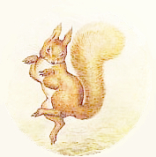
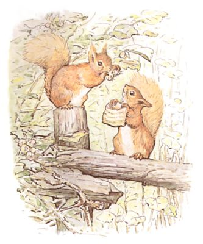
ノラに おくる ものがたり
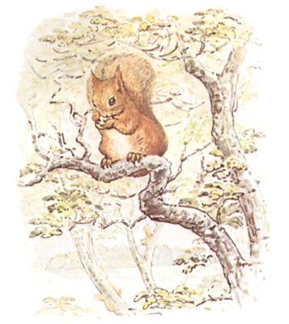
これは おはなしです――つまりは きたりすの しっぽの はなしで、 そのこの なまえは ナトキンと いいました。
チンクルベリという おにいさんと おおぜいの いとこがいて、 みんなして みずうみの ほとりにある １ぽんの きに すんでいました。
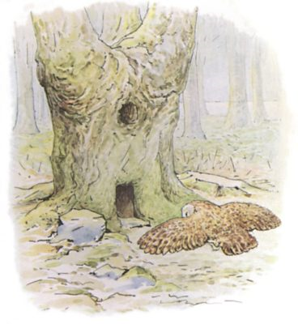
そのみずうみの まんなかには しまが あって、 もりと どんぐりの やぶに おおわれて、 １ぽんの がらんどうに なった ナラのきが ありました。 そこは しまの ぬしである ブラウンという ふくろうの おうちでした。
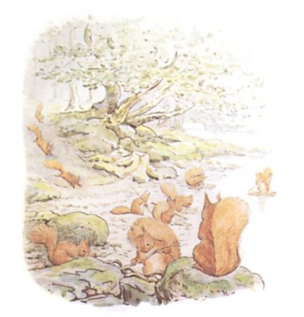
あるとしの あきは きのみも たわわ、 ハシバミの やぶでも はっぱが きいろに みどり ―― ナトキンと チンクルベリは おおぜいの こどもりすと いっしょに もりの そとへ でて、 みずうみの ほとりへと むかいました。
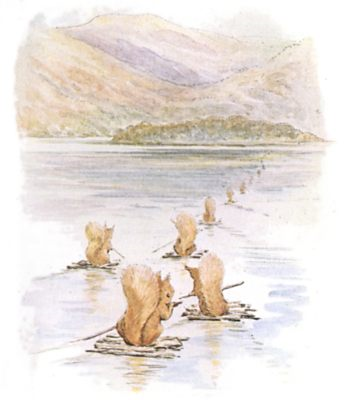
ちからを あわせて きのえだで こぶりの いかだを つくって、 みなもを こぎこぎ、 どんぐりを あつめに ふくろうの しまへ むかいます。
ひとりひとり ちいさな ふくろと おおきな オールを てにして、 ほぬのがわりに しっぽを のばします。
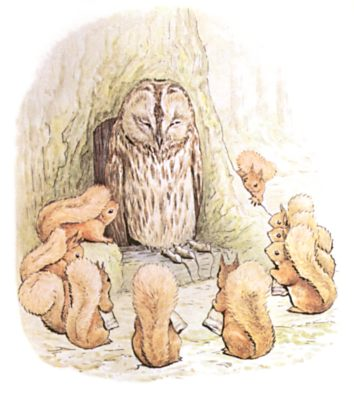
しまの ぬし ブラウンへの てみやげとして ３びきの ぶくぶくとした ねずみも つれていって、 とぐちの ところへ さしだしました。
それから チンクルベリと りすいちどうは いっせいに ふかぶかと おじぎを して、 ていねいな ことばづかいで、
「しまの ぬし ブラウンさま、 どうか このしまの どんぐりを とること おゆるし ねがえませんか？」
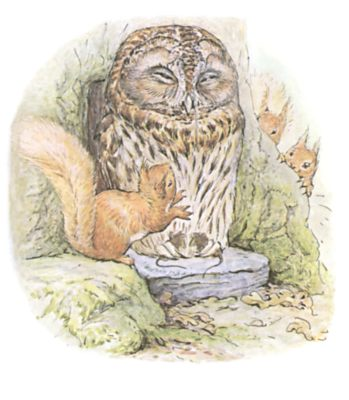
ところが ナトキンの たいどは めに あまるほど なまいきで、 あかい サクランボみたいに ふらふらと うごきながら こんなことを うたうのです。
「なぞなぞ なぞなぞ といてみろ！
あかい ふく きた ちびっこが
てには ぼうきれ、 のどには こいし、
このなぞ とけたら おだちんやるぞ。」
とはいえ このなぞなぞは むかしながらの ものなので、 しまぬしさまも ナトキンを とことん むししました。あかい ふく きた ちびっこが
てには ぼうきれ、 のどには こいし、
このなぞ とけたら おだちんやるぞ。」
かたく めを つむると ぐっすり すやすや。
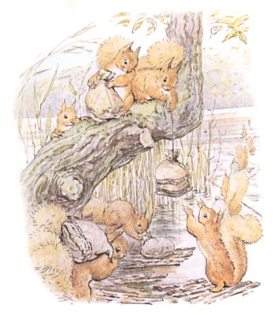
りすたちは ちいさな ふくろ いっぱいに どんぐりを つめ、 ひが くれると いかだを こいで おうちへ かえりました。
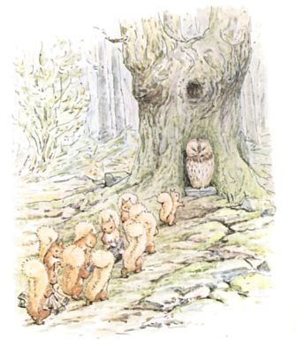
けれども あくるひの あさ ふくろうの しまに もういちど みんなで むかいました。 チンクルベリたちは １ぴきの まるまる ふとった もぐらを もっていって、 しまぬしさまの とぐちまえにある いしの うえへと のせて、 いいました。
「ブラウンさま、 どうか もっと どんぐりを とること、 おおめに みて いただけませんか？」
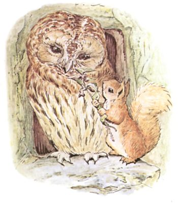
ところが ナトキンは ぶれいせんばん ぴょこぴょこ あたりを うごきまわって、 しまぬしさまを イラクサで ちくりと さし、 うたを うたうのです。
「ブーの じじい、 なぞなぞ とけよ！
ヒッチピッチが かべのなか
ヒッチピッチは かべのそと
ヒッチピッチに さわったら
ヒッチピッチが かみつくぞ！」
しまぬしさまは やにわに めを あけると、 もぐらを かかえて おうちの なかへ はいってしまいました。ヒッチピッチが かべのなか
ヒッチピッチは かべのそと
ヒッチピッチに さわったら
ヒッチピッチが かみつくぞ！」
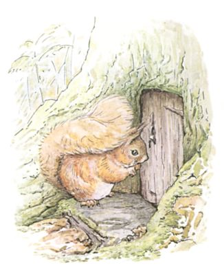
ナトキンの めのまえで とびらが しまり、 やがて まきを もやす こい けむりが ほっそりと きの てっぺんから ふきだしてきました。 そこで ナトキンは かぎあなから なかを のぞいて またしても うたいます。
「おうちは いっぱい、 あなも いっぱい！
だから おわん １ぱいぶんも あつまらない！」
だから おわん １ぱいぶんも あつまらない！」
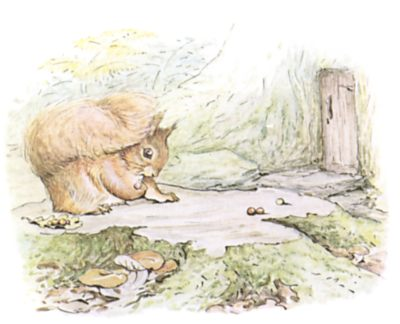
りすたちは しまじゅうで どんぐりを さがし、 ちいさな ふくろを いっぱいに しました。
けれども ナトキンは きいろや あかの むしこぶを ひろいあつめて、 ブナの きりかぶに すわって たまあそびを しながら しまぬしさまの おうちの とびらを じっと みはるのです。
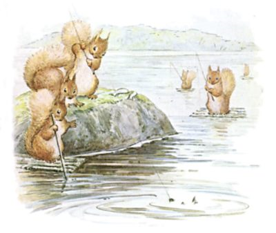
みっかめの りすたちは はやおきして つりに でかけました。 つりあげた ７ひきの ぷりぷりした コイは しまぬしさまへの みつぎものです。
みんなで みずうみを わたり、 ふくろうじまの ひんまがった クリのきの したから おかに あがります。
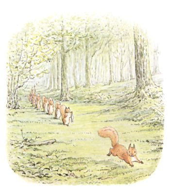
チンクルベリと ６ぴきの りすは ぷりぷりした コイを それぞれ １ぴきずつ はこんだのですが、 ナトキンは おぎょうぎも よくないので みつぎものなんか まったく もちません。 いちばん まえを はしって、 うたを くちずさむのです。
「あれちの おとこが ぼくに つげた
『うみでは イチゴは いくつ そだつ？』
しょうがないから こたえは 『もりで
にしんの くんせい そだつ かず。』」
それでも しまぬしさまは なぞなぞを どうとも しないのです。 せっかく こたえまで おしえてあげたのに。『うみでは イチゴは いくつ そだつ？』
しょうがないから こたえは 『もりで
にしんの くんせい そだつ かず。』」
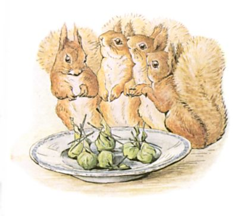
よっかめの りすたちの おみやげは まるまるした カブトムシ ６ぴきで、 ぬしさまからすれば プラムプディングに はいってる プラムみたいな ものなのです。 カブトムシは １ぴきずつ ギシギシの はっぱで ていねいに くるんで、 マツバを さして とめてありました。 にもかかわらず ナトキンは あいもかわらず うたいます。
「ブーの じじい！ なぞなぞ とけよ
イギリスこむぎこ スペインくだもの
どしゃぶりのなか はちあわせ、
ぐるぐるまきで ふくろに いれろ、
このなぞ とけたら ゆびわを やるぞ！」
そんなこと いうなんて ナトキンも おばかさんです。 だって しまぬすさまに さしあげる ゆびわなんて そもそも ないんですから。イギリスこむぎこ スペインくだもの
どしゃぶりのなか はちあわせ、
ぐるぐるまきで ふくろに いれろ、
このなぞ とけたら ゆびわを やるぞ！」
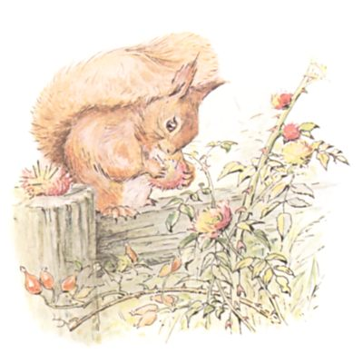
ほかの りすたちは やぶを かけまわって どんぐりを ひろっていたと いうのに ナトキンは イバラから おちた むしこぶを あつめて みんな マツバの はりで めったざしに してしまいました。
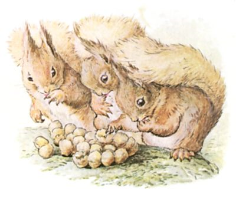
いつかめに りすたちが みついだのは、 とれたての はちみつだんご。 とっても あまくて とろとろ していて、 いしの うえに おいたあとでも ゆびを ねぶってしまうほどです。 おかの てっぺんぺんにある まるはなばちの すから かっぱらってきた ものでした。
ところが ナトキンは あたりを スキップしながら うたいます。
「ぶうんぶん！ ぶぶ！ ぶぶ！ ぶうんぶん！
チップルチンの あたりを ゆけば
ぶうぶうブタの むれに であう
きいろの おくびに きいろい おけつ！
やつらは チップルチンの あたりでは
いちばん ぶうぶう なくブタよ。」
チップルチンの あたりを ゆけば
ぶうぶうブタの むれに であう
きいろの おくびに きいろい おけつ！
やつらは チップルチンの あたりでは
いちばん ぶうぶう なくブタよ。」
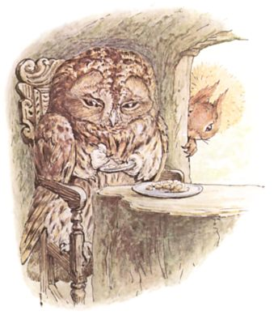
しまぬしさまは ナトキンの ぶれいな ふるまいに いやけが さして めを そむけました。
それでも はちみつは めしあがりましたけど！
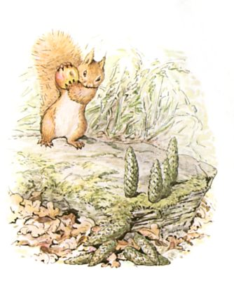
りすたちは みんなで こぶくろに どんぐりを つめました。
けれども ナトキンは ひらべったい おおいわの うえに あがって、 ヒメリンゴと モミの まつかさで ボウリングあそびです。
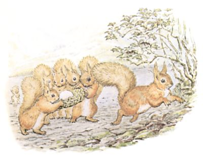
むいかめは どようびで りすたちが くるのも これで さいご。 ちいさな いぐさの かごで うみたての たまごを もってきて、 ぬしさまへの おわかれとばかりに さしあげるのです。
それなのに ナトキンは まえを かけまわって おおごえで ――
「ハンプティダンプティ とこにふす
かけぶとんが こんもりと
いしゃが４０ だいくが４０
それでもなおらぬ ハンプティダンプティ！」
かけぶとんが こんもりと
いしゃが４０ だいくが４０
それでもなおらぬ ハンプティダンプティ！」
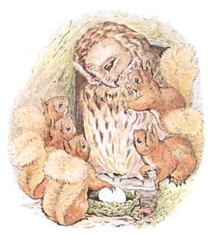
それはさておき しまぬしさまは たまごが いたく おきにいりで、 かためを あけて また とじました。 でも やっぱり なんとも しゃべりません。
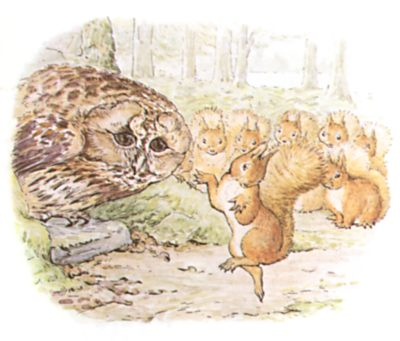
ナトキンは ますます いいきに なって ――
「ブーの じじい！ ブーのじじい！
はづな、 はづな、 おしろの
いたばの ドアの とこ
うまと けらいが そうででも
おしろの いたばの ドアからは
はづな はづなは はずされぬ。」
ナトキンの おどりあばれる さまは まるで おひさまの ひかりのようでしたが、 それでも しまぬしさまは びどうだに しません。はづな、 はづな、 おしろの
いたばの ドアの とこ
うまと けらいが そうででも
おしろの いたばの ドアからは
はづな はづなは はずされぬ。」
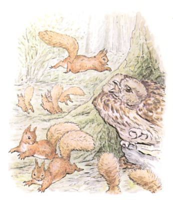
ナトキンは またも はじめます ――
「ゆみひき アーサー なわぬけて
おたけび あげて さんじょうだ
スコットランドの おうの ちからも
ゆみひき アーサー とめられぬ。」
ナトキンの うるささと いったら もう あらしのようで、 あげくの はてに しまぬしさまの ずじょうに ぴょーんと とびかかったのです！ ……おたけび あげて さんじょうだ
スコットランドの おうの ちからも
ゆみひき アーサー とめられぬ。」
すると みんな いっせいに ちらばって、 ちゅーと さけんで おおさわぎ。 ぜんいんが あわてふためき、 やぶのなかへと きえてしまいました。
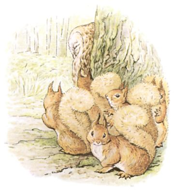
やがて こっそり もどってきて きのうらから ようすを うかがうと、 しまぬしさまは とぐちのところに すわったまま びくともせず めを とじていて、 まるで なにも なかったかのよう。
＊ ＊ ＊ ＊
ところが ナトキンが ぬしさまの おなかの けのなかに おさまっているでは ありませんか！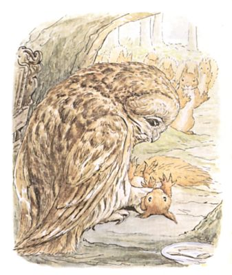
ここで おはなしが おちそうなものですが、 そうは いきません。
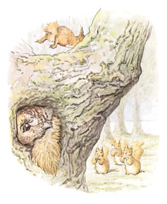
ぬしさまは ナトキンを おうちのなかへ つれこんで、 そのしっぽを つかんで かわを はごうと しました。 けれども ナトキンも ぐっと つよく ひっぱったので、 しっぽは まんなかで ちぎれてしまったのです。 そのまま かいだんを かけあがって、 やねうらの まどから にげだしました。

そんなわけで いまの いまでも きのうえに のぼって ナトキンに なぞなぞを だそうものなら、 えだを なげつけてきて じだんだ ふんで、 ぷんすか わめくでしょう ――
「くそ ―― くそ ―― くそ ―― くっそ ―― くそおおお！」
（おしまい）